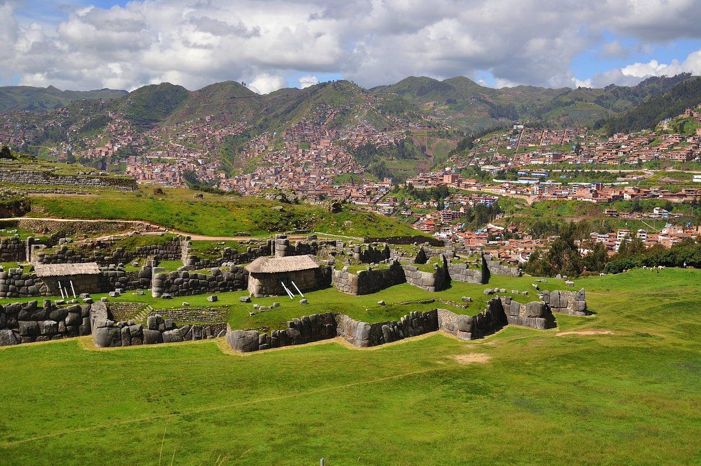
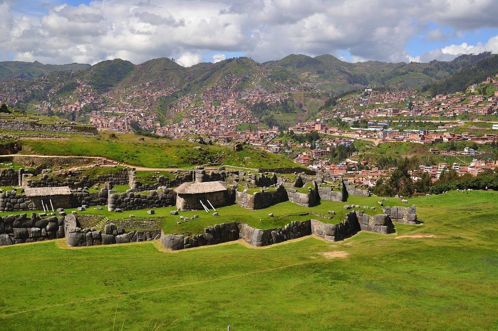

Sacsayhuamán: La imponente fortaleza inca en Cusco
Sacsayhuamán es una de las construcciones más impresionantes del Imperio Inca, ubicada en la parte alta de Cusco. Su enorme estructura de piedra ha resistido el paso del tiempo y sigue asombrando a visitantes de todo el mundo.
Historia
Construida durante el gobierno de Pachacútec en el siglo XV, Sacsayhuamán fue una fortaleza ceremonial y estratégica. Sus muros de piedra encajan perfectamente sin el uso de mortero, demostrando la avanzada ingeniería inca. También fue escenario de batallas históricas durante la conquista española.

 

Horarios y Ubicación
- Ubicación: A 2 km al norte de la Plaza de Armas de Cusco, Perú.
- Horarios de visita: Todos los días de 7:00 a.m. a 6:00 p.m.
- Costo de entrada: Incluido en el Boleto Turístico de Cusco.
Consejos para Visitantes
- Visita temprano: Para evitar multitudes y aprovechar la mejor luz para fotografías.
- Usa ropa cómoda: Lleva calzado adecuado para caminar por el terreno rocoso.
- Lleva agua y protector solar: La altitud y el clima pueden hacer que la visita sea exigente.
- Contrata un guía: Para entender mejor la historia y la importancia del sitio.
- Disfruta del Inti Raymi: Si visitas en junio, puedes presenciar esta espectacular celebración inca en Sacsayhuamán.